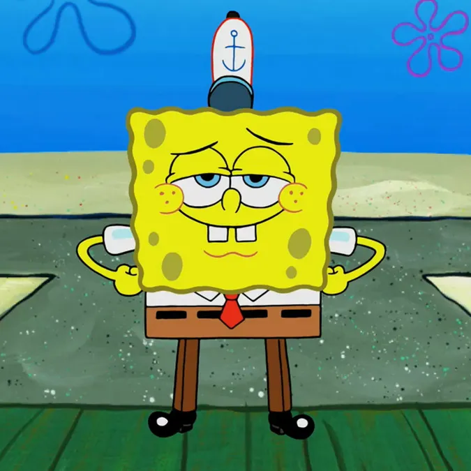
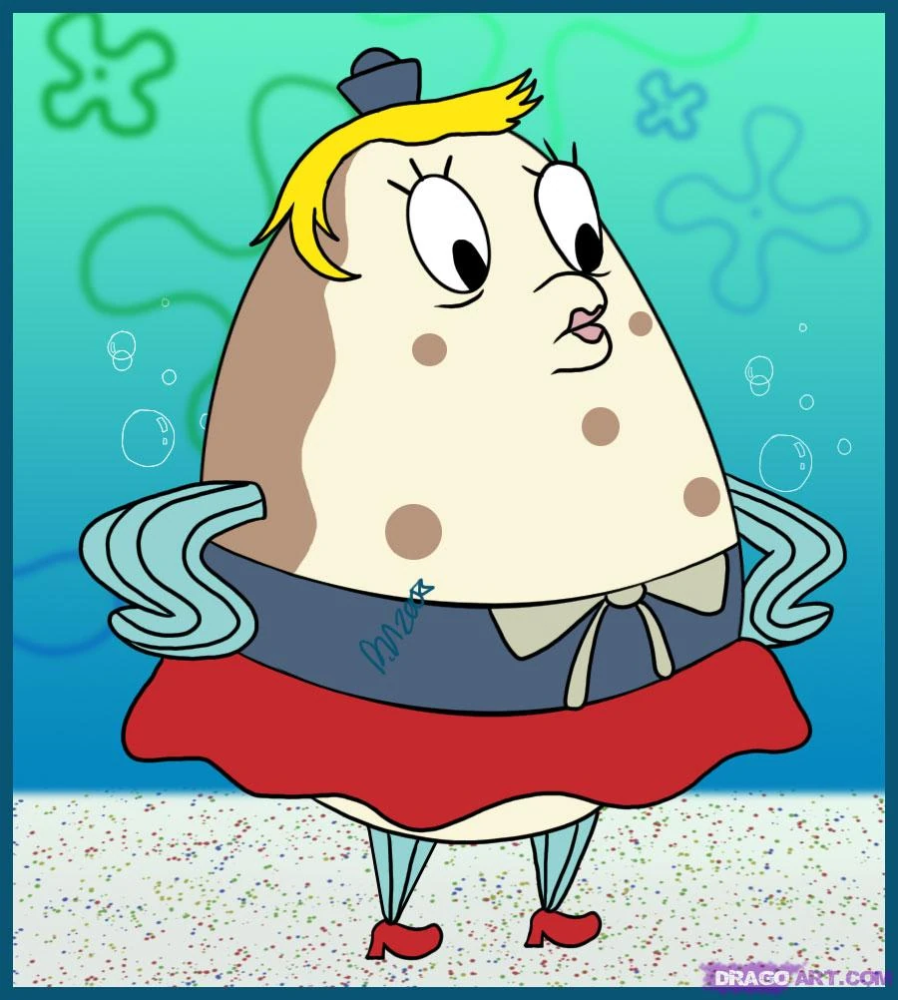

Bob Esponja
Cocinero en el Crustaceo Cascarudo
Una esponja marina alegre, optimista y extremadamente trabajadora que vive en una piña con su caracol Gary.

Explora lo personajes mas iconicos de la serie animada "Bob Esponja Pantalones Cuadrados".

Cocinero en el Crustaceo Cascarudo
Una esponja marina alegre, optimista y extremadamente trabajadora que vive en una piña con su caracol Gary.

Cajero y Clarinetista
Un pulpo amargado que sueña con ser un artista famoso. Odia su trabajo y le molesta su vecindario.

Dueño de el Crustaceo Cascarudo
Un cangrejo extremadamente tacaño obsecionado con el dinero y protector de la formula secreta.

Cientifica e inventora
Una ardilla de texas experta en karate que vive bajo el agua usando un traje de buzo especial.

Mejor amigo.
Una estrella de mar perezosa pero leal. el mejor amigo de Bob Esponja y vive bajo una roca.

Propietario del Balde de Carnada
El rival de Don Cangrejo. Pasa todo su tiempo intentando robar la formula secreta de la cangreburguer.

Mascota de Bob Esponja
Un caracol marino inteligente que se comporta como un gato y suele dar sabios consejos a Bob.

Instructora de navegacion
Un pez erizo que dirige la escuela de canotaje y sufre constantemente por la conduccion de Bob Esponja.